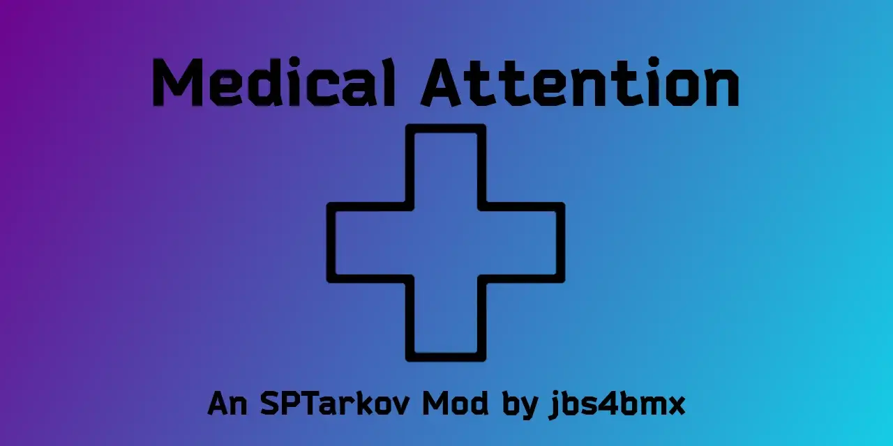

Medical Attention
- Downloads
- 4,518
- Favourites
- 12
- Mod lists
- 21

This is a mod that buffs the current in-game medical items to be more useful for quick or casual players. You can modify some of the properties of medical items by changing the values found in the configuration file.
- Reduced usage time on all medical items.
- Sanitar’s items have been debuffed to prevent him from healing too rapidly.
- CMS and Surv12 surgery kits have been buffed to prevent most or all loss of HP for the blacked out body part that they repair.
- Med Kits can be configured to heal fractures and blacked out body parts.
- Med Kits now include positive effects such as pain relief, radiation treatment, and contusion healing.
- All items have configurable HP resource rate and/or number of uses.
- All items with lasting positive effects have configurable durations. For example:
- Pain relief provided by pills or stims
- See item 5 above.
List of items that currently are able to, or can be configured to, repair a blacked out body part. Table updated for version 380.0.2 and newer.
| Item | Potential HP Loss (percent) |
|---|---|
| Salewa | Up to max of 30 % |
| IFAK | Up to max of 20 % |
| Sanitar’s IFAK | Guaranteed loss of 25-75% |
| AFAK | 0 % |
| Grizzly | 0 % |
| CMS | Up to max of 10 % |
| Sanitar’s CMS | Guaranteed loss of 10-70% |
| Surv12 Field Surgery Kit | 0 % |
Edit the included config.jsonc file found in the “[SPT]/SPT/user/mods” folder to enable/disable modifications and even raise or lower some of the modification values.
You may further modify the values found in the BuffGlobals.json file found in the same folder, but use caution when changing those values. Modification of those values will void support for the mod.
- PRO: You can enable only the medical items you want buffed. (Default: All items are enabled.)
- PRO: Medical item buffs will give you the opportunity to go longer in game.
- PRO: Increased hpResourceRate in config can increase how much of your body parts are healed during each use.
- CON: Can be too OP for hardcore players.
FIKA - No; I will not be adding it in the future.
Extract the contents of the zip file to the “root” of your SPT folder.
- The same location as ‘EscapeFromTarkov.exe’.
Edit the configuration file to your desired state.
- Delete ‘MedicalAttention’ folder from the “[SPT]/SPT/user/mods” folder.
- Delete ‘MedicalAttention-Client.dll’ file from the “[SPT]/BepInEx/plugins” folder.
Mod Source: Github
Compatibility with other mods is neither expressed nor implied. (Attempts will be made to correct this, but cannot be guaranteed.)
Support is neither expressed nor implied. (There is no guarantee of expedited or resultant service.)
Support is definitely NOT given to earlier versions of the mod.
If you would like to report an issue, please keep the report short and concise.
- Reporting of issues is okay.
- Reporting on mod incompatibility is okay.
- Complaining about how the mod functions, whether good or bad, is NOT okay.
- Be civil or you will be ignored.
This is definitely not required and you have every right to ignore this tab, but if you would still like to buy me a coffee, I’d greatly appreciate it. Any and all proceeds will go towards further development/maintenance of mods.
Version
4.0.3
Changes
This release includes a major internal refactor of MedicalAttention, focused on stability, consistency, and long‑term maintainability. Several long‑standing issues reported by users have been resolved as a result of this rewrite.
✨ Major Improvements
- Fully modularized medical item logic using dedicated helper classes.
- Unified and consistent handling of medkits, pills, bandages, splints, topicals, surgical kits, tourniquets, and stimulators.
- Greatly improved maintainability, auditability, and future‑proofing.
⚡ Dynamic Stimulator Handling
- Replaced hard‑coded stim lists with automatic detection based on the Stimulator parent category.
- Morphine (the only stim under the Drugs parent) is now explicitly included.
- Removed per‑stim
MaxHpResourceassignments — all stims now use the globalAllInjectors.Usesvalue. - Fully supports modded stimulators without requiring manual TPL updates.
🩹 Corrected Medical Effect Logic
- Standardized application of:
- Light bleeding fixes
- Heavy bleeding fixes
- Fracture fixes
- Destroyed limb fixes
- Ensures consistent behavior across all medkits and surgical kits.
🧼 Config Cleanup & Validation
- Removed unused config sections (
Ebudal,ModInjectors). - Added missing config fields (e.g.,
AddFixFracturefor Surv12 surgical kit). - Ensured all config options map directly to helper methods.
🔧 Helper Method Fixes
- Added missing helper methods:
ApplyFractureFixApplyDestroyedPartFixItemResizeHelper.ResizeItem
- Eliminated all missing‑method errors and restored intended functionality.
🛠 Stability & Predictability
- Fixed several silent failure points from previous versions.
- Improved null‑safety and item property validation.
- Ensured all item modifications only occur when explicitly enabled in config.
📜 Logging & Diagnostics
- Added clear logging for every item type updated.
- Improved visibility into stim detection and configuration application.
🔮 Future‑Proofing
- Dynamic detection ensures compatibility with:
- New SPT medical items
- Modded stimulators
- Database changes in future SPT releases
Virus Total Results
Link: Results Page